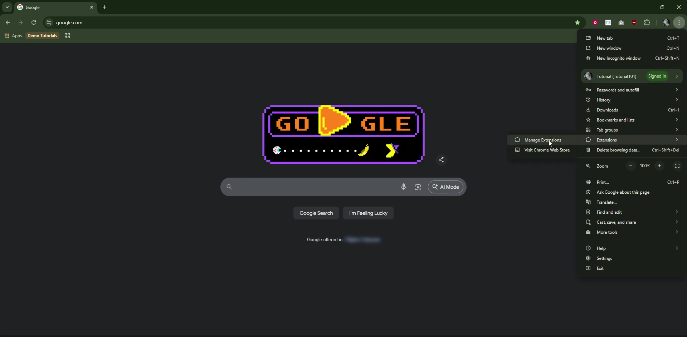
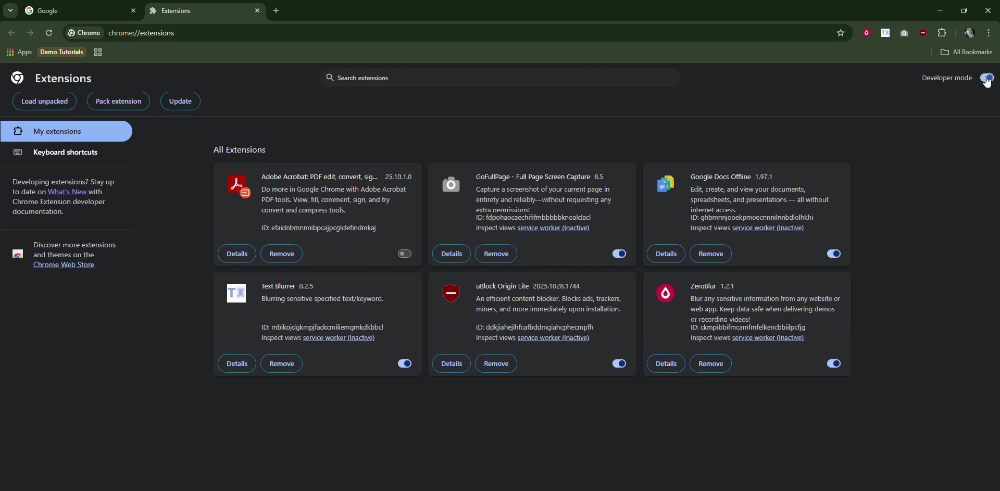
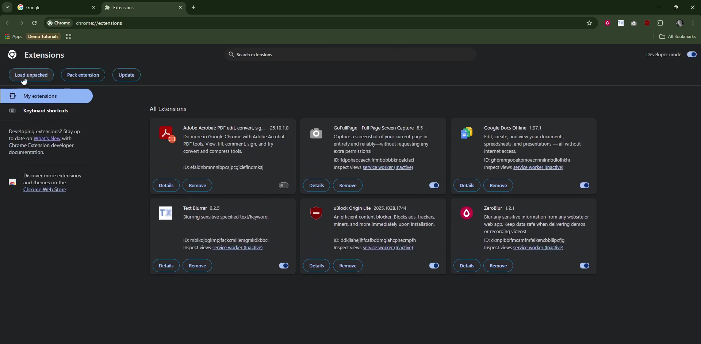
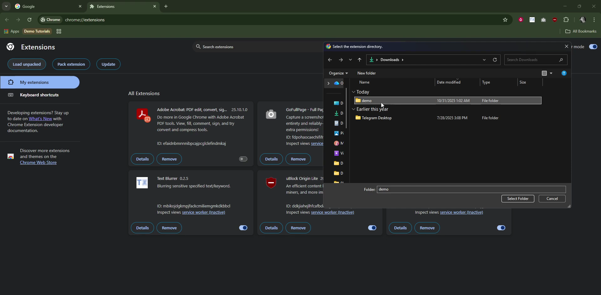
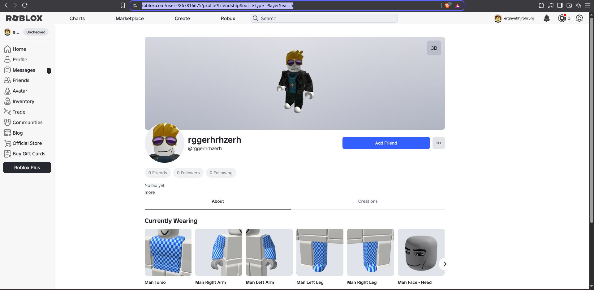
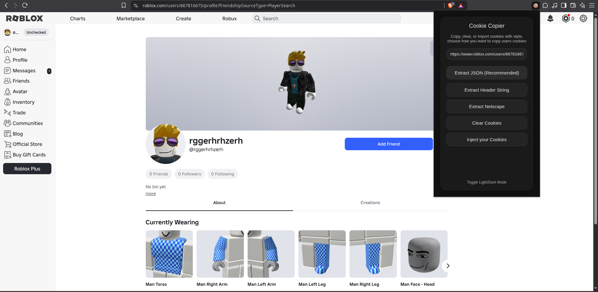
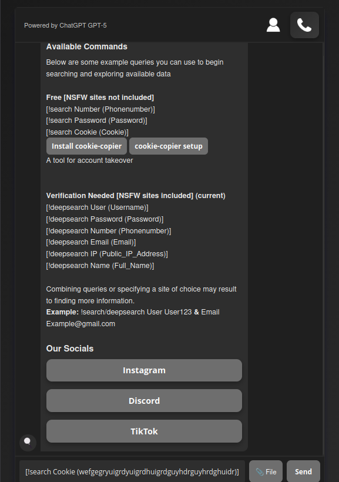

Follow these simple steps to install the Browser-Extension.
This guide shows you exactly how to load Cookie‑Copier into your Browser Extensions.

Step 1: Once you have downloaded and extracted the Cookie‑Copier ZIP file, open your preferred web browser. Navigate to the Extensions Management area by clicking the three‑dot menu located in the upper‑right corner of the browser window. From the dropdown menu, hover over “Extensions” to reveal additional options, then select “Manage Extensions” to proceed.

Step 2: Next, locate the Developer Mode toggle in the upper‑right corner of the Extensions Management page. Enable Developer Mode to unlock advanced controls, including the ability to manually load extensions directly from your file manager. This step is required in order to install Cookie‑Copier from the extracted folder rather than through the browser’s extension store.

Step 3: Click the “Load unpacked” button within the Extensions Management page. This action will open your system’s file explorer, allowing you to navigate directly to the folder where you extracted the Cookie‑Copier ZIP file. Once the file explorer window appears, you can proceed to select the appropriate folder to install the extension.

Step 4: In your file explorer, navigate to the folder where you extracted the Cookie‑Copier ZIP file. Ensure that the folder is fully unzipped browsers cannot load extensions directly from a compressed archive. Once you select and open the unzipped Cookie‑Copier directory, the browser will automatically import the extension and enable it. If the installation completes without any warnings or error messages, everything is successfully set up and ready to use.

Step 5: After installation, visit the website of your choice where you want to find vulnerable cookies that you can find, In this case the chosen website is Roblox. Once you visited your target's profile whos cookies you want to look for you can copy the URL.

Step 6: Open the extension and paste the URL like shown in the example. Once you have pasted the cookies select "Extract JSON" to gather the best results, let it search and copy. Once the cookies are copied to your clipboard head over to OSINTScraper.

Step 7: Once you are on the chat page from OSINTScraper choose the command dedicated to search for cookies. Simply paste the string into the brackets and your command is ready to be sent. The string you paste will be much longer than mine but dont be scared OSINTScraper will do its thing and print any found results in a simple and readable text.